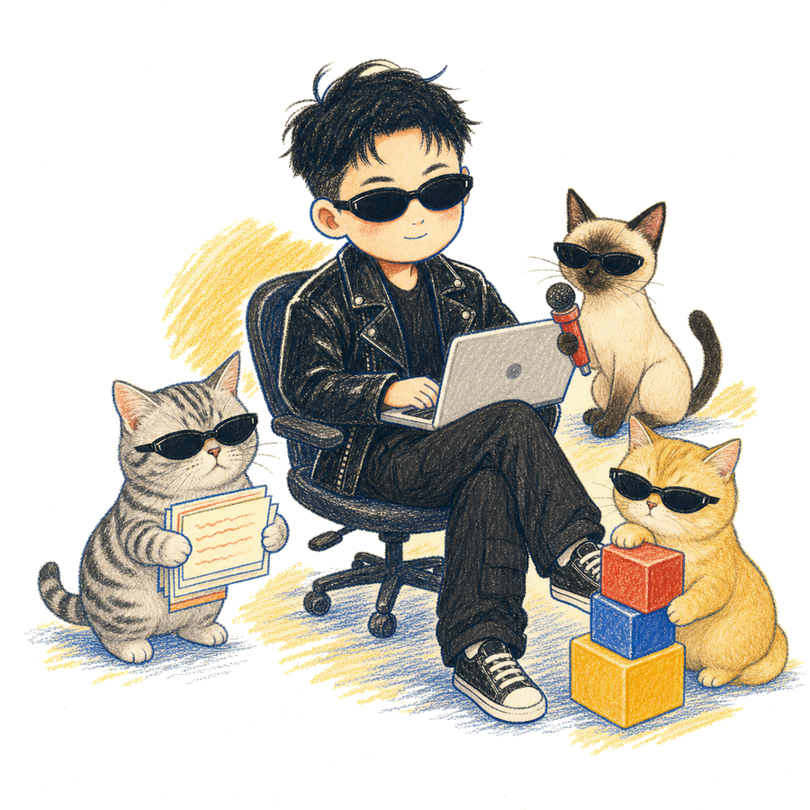

Scroll to Launch
滚轮 / 触控 / 点击屏幕都可以进入
↓
WELCOME TO 维天OS
程序员 all in AI
帮你用 AI 重装工作方式：AI 学习 · AI 编程 · FDE 转型。一个人 + AI，跑通完整内容系统。


小天说FDE · 维天说
用 AI 学习、实践、输出。
程序员出身：索尼实习 → 大华摄像机系统开发 → 海康威视 → 裸辞 all in AI。
做过嵌入式软件、Linux 和制造业安防系统，现在用 AI 重装自己的全部工作方式：AI 编程、多 Agent 编排、内容工作流、个人知识库——一个人跑通从选题到发布的完整系统。
FDE 系列全网将近十万阅读。这里是我的升级记录，也是你的捷径。
和三只猫一起生活、工作、升级系统。
经营主体：杭州纬聆科技有限公司 · 企业服务：willeai.cn
免费领取 AI 内容工作流
一个人，也能搭起自己的 AI 内容工作流

- AI 内容工作流 Skill
- 初始化脚本与目录模板
- 从真实素材跑出第一份内容的说明
领取后，从一段真实经历开始，跟着流程跑出第一条选题和口播稿。
扫码添加后备注「工作流」。手机用户可长按或保存二维码，再用微信识别。
先领取 → 跑一遍 → 遇到卡点再来问
找我精选
从 FDE 入门、AI 编程和真实实践开始，再看工作流、知识库与 Skill。
维天说 AI 内容工作流
- 找到真实素材从经历、项目、笔记和真实卡点开始。
- AI 反向访谈让 AI 先追问事实、冲突和真正的问题。
- 生成内容问题卡锁定受众、问题、承诺与不能承诺的边界。
- 写出可修改草稿形成口播、图文或文章的第一版。
- 确认事实与边界区分已确认事实、待确认项和 AI 推断。
- 发布、复盘、写回根据真实反馈更新知识库、模板与 Skill。
按你要解决的问题选择。双击卡片，直接打开对应 GitHub 仓库。
企业服务
ToC 内容之外，企业客户按场景承接诊断、培训与落地。
经营主体：杭州纬聆科技有限公司
AI 落地：企业 AI 诊断 · 场景选择 · 系统集成 · 数据处理
培训：AI 工具与 AI 编程内训 · 业务团队实操陪跑
内容：数字内容制作 · 视频制作 · 广告与营销策划
服务介绍与联系方式见公司官网：
willeai.cn ↗⚠️
无法打开 "Ver 3"
因为你已经在 Ver 3 里面了。
请勿套娃🙅
请勿套娃🙅
好吧，我知道了
$ cat follow.log
在各个平台找到「小天说FDE」
$ ls platforms/
公众号：维天说 抖音 / B站 / 小红书 / 视频号：小天说FDE
$ fortune
人生没有最终版本，只有持续更新。
$ exit
[Process completed]